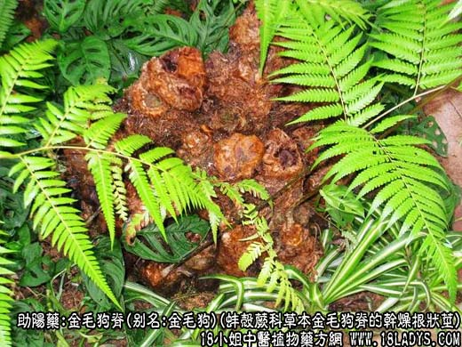
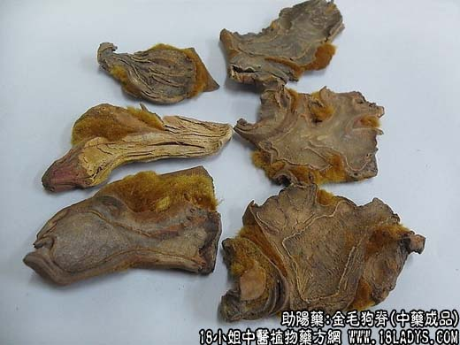
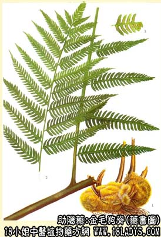

狗脊为较常用中药。始载《神农本草经》，列为中品。商品有狗脊及狗脊片两种。
别名：金毛狗脊、金毛狗、狗脊骨。
来源：为蚌壳蕨科多年生草本植物金毛狗脊的干燥根状茎。野生于山野。
产地：主产于四川、福建、浙江，此外广东、广西、湖北、湖南、江西、云南、贵州等地亦有生产。
性状鉴别：狗脊呈不规则的条块状，较大的团块形似金毛狗头。长8～20余厘米，直径3～10厘米。外被金黄色光亮的密集长绒毛，上面的数个或数十个棕红色木质叶柄残基，叶柄基上绒毛多脱落，中下部的叶柄周围有丛生棕色须根残留。质坚硬不易折断。气无，味淡微涩。
狗脊片呈不规则的厚片，大小不一，厚1～3厘米。周边凸凹翘卷不平整，常带有未去尽的金黄绒毛，绒毛脱落处棕红色，切面黄白色布满棕色小点，在近外皮处有一条断续的黄棕色环状皮层。质硬脆，易折断，粉性。气味同上。
以体质坚实，表面棕色，内具粉性，切片均匀者为佳。
主要成分：含绵马酸及淀粉约30%。甲醇提取物水解产生山奈醇。
功效与作用：强筋骨、祛风湿。
炮制：蒸用或砂烫用，均刮去绒毛串砸成小块。
性味：苦、甘、温。
归经：入肝、肾经。
功能：补肝肾，强筋骨，祛风湿。
主治：风寒湿痹，足膝无力，腰背酸痛，老人尿频等症。
临床应用：风湿关节痛而有肝肾不足者较适用。本品补肝肾之力虽较弱，但在祛风湿寒邪之中仍带有一点补性。故对体弱老人的寒湿膝痛、腰痛，尤其腰脊僵硬疼痛、屈伸不便者（例如类风湿性脊椎炎）最适用。常配牛膝、续断、杜仲等，方如狗脊饮。又治病后足肿，可用狗脊配当归；治肾病腰痛，狗脊可与菟丝子配伍，都有一定帮助。
用量：4.5～9g，入煎剂或浸酒服均可。
处方举例：狗脊2饮：狗脊9g，川牛膝9g，海风藤9g，宣木瓜9g，杜仲9g，秦艽6g，桂枝6g，熟地12g，虎骨胶6g（溶化），水煎服。
注：狗脊上的金黄色绒毛，取适量外敷，对外伤性出血有良好的止血作用。